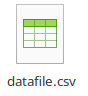
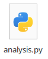
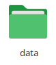
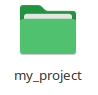

from pathlib import Path9 الملفات
لا يكون البرنامج مفيدًا من غير منفذٍ يُخرِج فيه نتائجه.
رغم تعقيد الحواسيب اليوم، إلا أنها في الأصل راجعة إلى معمارية فون نويمان (1945م) التي سبق بيانها:

فتنقسم العمليات الحاسوبية إلى نوعين بحسب المنفذ الحقيقي لها:
الأول عمليات حساب (Computation): عمليات تنفذها وحدة المعالجة المركزية (CPU). وذلك مثل الجمع والطرح، وفصل النصوص ودمجها، والشرط والتكرار، ونحو ذلك.
الثاني عمليات إدخال وإخراج (I/O): عمليات تنفذها الأجهزة المرتبطة به؛ بناءً على طلبه. ومثالها مما رأينا:
- الإجراء
input()فإنها من جنس عمليات إدخال المعطيات؛ ولا بُدَّ لها من منفذ تستقبل منه البيانات؛ فكان هو لوحة المفاتيح. - الإجراء
print()فإنها من جنس عمليات إخراج النتائج؛ ولا بُدَّ لها من مَنفَذ تدفع إليه مخرجاتها؛ فكان هو نافذة البرنامج (الشاشة).
ومن أجهزة الإدخال والإخراج (I/O) أيضًا:
- أجهزة استشعار: الحرارة والرطوبة والبعد والميل والاهتزاز والحركة …إلخ.
- أجهزة تحريك: المفتاح والماطور والصمام والطنان والسماعات …إلخ.
- أجهزة غالبًا هي متصلة بالجهاز المكتبي: لوحة المفاتيح والمؤشر والطابعة والكاميرا والمايكروفون والشاشة …إلخ.
وسننظر في كيفية قراءة وكتابة الملفات؛ فهي الشيء البرمجي الذي نتعامل معه لحفظ واسترجاع البيانات من أجهزة التخزين (Storage Devices).
المسار
المسار هو سلسلة تحدد موقع الملف في النظام. وهو على نوعين:
- مطلق (Absolute): يحدد المسار بشكل كامل بدءًا من الجذر.
- نسبي (Relative): يحدد المسار بالنسبة لموقع الملف الحالي.
وفواصل المسار شرطة مائلة:
/تميل للأمام (اليمين) في عُرف أنظمة ويندوز\تميل للخلف (اليسار) في عُرف أنظمة يونكس
والنقطة والنقطتان تدل على نسبية المسار:
.للدليل الحالي (هنا)..للدليل الأب (صعود)
| Path | Example |
|---|---|
| Absolute | /home/adam/projects/xyz/scripts/analysis.py |
| Relative | . |
| Relative | .. |
| Relative | ./a/b |
| Relative | ../a/b |
| Relative | a/b |
يتم ترتيب الملفات شجريًّا.
ففي نظام ويندوز (Windows) تكون الشرطة خلفية (\):
C:\
└── Users
└── Adam
└── MyProject
├── data
│ └── datafile.csv
└── scripts
└── analysis.pyفالحرف الأوَّل في الأعلى (C:) يمثِّل مكان جهاز التخزين. وإن رأيت D: أو E: فيعني أن الملفات تخزن في جهازين آخرين.
وقد تتساءل لماذا لم نبدأ بالحرف A: أو B:؟ وسبب ذلك تاريخي. وذلك أنَّهما كانا محجوزين للإشارة لجهاز تخزين عتيق يسمى القرص المرن (floppy disk)، ولم يعد يستعمل.
أما في أنظمة لينكس (Linux) وماك (MacOS) فإن الأصل يعبَّر عنه لا بحرف، وإنما بالمسار الجذر: / على النحو التالي:
/
└── home
└── adam
├── projects
└── myproject
├── data
│ └── datafile.csv
└── scripts
└── analysis.pyوتسمى الملفات المتضمنة لملفات أخرى: دليل (Directory). وهو الذي يعبَّر عنه فيما ترى في الواجهة الرسومية على شكل مجلَّد (Folder).
فإذًا الملفات على نوعين:
- ملف (File): وهو الذي يحوي بيانات نصية أو ثنائية. مثل:
datafile.csvملف بيانات جدولية analysis.pyملف برنامج بايثون 
- دليل (Directory): وهو قائمة من الملفات والأدلة. مثل:
dataدليل / مجلد البيانات myprojectدليل / مجلد المشروع 
صيغة الملف (File Extension) تُعرَفُ بالحروف بعد آخر نقطة. مثل:
datafile.csvصيغةcsvanalysis.pyصيغةpy
قراءة وكتابة الملفات
يتم فتح الملفات لغرض القراءة أو الكتابة بالإجراء open() هكذا:
f = open(file='salam.txt', mode='r')
content = f.read()
f.close()
print(content)- تم تحديد مسار الملف بالنسبة للملف الذي نحن فيه
- تم تحديد وضع القراءة:
mode='r'عند الفتح (open()) - يتم قراءة المحتوى النصي للملف بالفعل:
.read()المُسنَد إلى الملفfile؛ ونعين قيمة ذلك في المتغيرcontent - يتم إغلاق الملف حتى يستطيع برنامج آخر أن يفتحه؛ إذ لا يجيز نظام التشغيل أن يُفتح الملف في نفس الوقت من برنامجين مختلفين
- تتم طباعة المحتوى الذي قُرئ
أما فتحُ الملف لغرض القراءة، فيتم بتحديد وضعية القراءة open(mode='w') على النحو التالي:
content = """Salam everyone,
I hope you are enjoying the course,
Thank you.
"""
f = open(file='salam.txt', mode='w')
f.write(content)
f.close()
print(content)انظر توثيق قراءة وكتابة الملفات.
ولأن الفتح والإغلاق مقترنان في الموارد (Resources) المتنازع عليها (والذي يديرها نظام التشغيل)؛ فلا بد من الإغلاق بعد كل فتح. ووضع في اللغة مفهوم مدير السياق حيث يستعمل معها جملة with: فيكون ما بداخلها يعمل في سياق توفر المورِد، فإذا انتهت القطعة أغلِق المورِد تلقائيًّا. وبالمثال يتضح المقال:
contents = ''
with open(file='salam.txt', mode='r') as f:
contents = f.read()
print(contents)لاحظ أننا لم نحتج لفعل الإغلاق: f.close() بل يتم ذلك بعد آخر جملة مضمَّنة داخل نطاق with.
مكتبة المسار (pathlib)
تعنى مكتبة المسار (pathlib) بجميع ما يخص المسار: إنشائه والبحث فيه والاستعلام عن مدلوله والسير فيه.
ملاحظة
يجدر بالذكر أن مكتبة pathlib جاءت متأخرة في إصدار Python 3.4 لمعالجة الملفات بأسلوب البرمجة الشيئية (OOP)، بينما تستعمل مكتبة os التي سبقتها لأغراض متعددة فيما يخص نظام التشغيل (os = Operating System) من ضمنها خُصِّصَت os.path للتتعامل مع نظام الملفات إلا أنها كُتِبَت بأسلوب إجرائي تأسيًّا بلغة سي (C)، فهي منخفضة المستوى (تتعامل مباشرة مع bytes و str) بالمقارنة بالبرمجة الشيئية الأعلى في التجريد؛ وهو ما نفضله. انظر مقارنة pathlib بوحدات os و os.path.
ويستعمل المسار Path مكان النص بعد إنشائه على النحو التالي:
p = Path('salam.txt')
contents = ''
with open(file=p, mode='r') as f:
contents = f.read()
print(contents)الدليل (Directory)
أحيانًا نريد التعامل مع مجلَّد يحوي مجموعة ملفات، بنقلها أو نسخها أو حذفها ونحو ذلك.
انظر قراءة الأدلة.
لعرض قائمة الدليل، نستعمل المكرر الناتج من فعل .iterdir() ونكرر عليه، وهو بدورِه يُنتج في كل كرةٍ مساراً (x). وهذا المسار يُمكن التحقق من أنه يشير إلى دليل أو لا (x.is_dir()) على النحو التالي:
p = Path('.')
dirs = [x for x in p.iterdir() if x.is_dir()]
dirsجرب
هل تريد أن تعرف حجم دليل التنزيلات (Downloads) في جهازك؟. لديك الفعل stat() للحصول على بيانات عن الدليل، والتي من ضمنها الحجم (st_size) هكذا:
p = Path.home() / 'Downloads'
size = p.stat().st_size
print(size, 'bytes')ثم هذا الإجراء لتحويل الوِحدة من البايت إلى الكيلو والميجا والقيقا:
def format_size(size):
size_kb = size / 1024
size_mb = size_kb / 1024
size_gb = size_mb / 1024
if size_gb > 0.1:
return f'{size_gb:.2f} GB'
elif size_mb > 0.1:
return f'{size_mb:.2f} MB'
return f'{size_kb:.2f} KB'
print(format_size(size))البحث العام
يستعمل البحث العام (Globbing) لمطابقة عدة ملفات تحت مسار معيَّن بنمط معيَّن.
وهي لغة تنميط بسيطة جدًّا لا تقارن بتعقيد التعبيرات النمطية (Regular Expression) التي سبق ذكرها. وإليك تطبيقًا تفاعليًّا يجمع لك جميع مفاهيمها: globster.
مثلاً: نبحث في المسار path/to/my/pictures/ عن جميع الصور (ذات الصيغة .jpg) في كل ما يتفرع عن ذلك المسار وإن نزل:
total_size = 0
for p in Path('path/to/my/pictures/').glob('**/*.jpg'):
total_size += p.stat().st_size
print('Total size:', total_size, 'bytes')
print('Total size:', format_size(total_size))المشي على جميع ملفات الشجرة
نستعمل الفعل .walk() لطرق جميع فروع المسار:
p = Path('../../datasets/example_root/')
for dirpath, dirnames, filenames in p.walk(top_down=True):
print(dirpath)
for file in filenames:
print(f'\t{file}')
# print('\tFULL PATH:', Path(dirpath) / file)../../datasets/example_root
something.txt
../../datasets/example_root/a
A_domestic_cat.jpg
zzz.txt
A_domestic_cat.jpgZone.Identifier
a.txt
../../datasets/example_root/b
DSC0532_(9120523417).jpg
A_yellow_and_white_cat.jpg
DSC0532_(9120523417).jpgZone.Identifier
b.txt
A_yellow_and_white_cat.jpgZone.Identifier
../../datasets/example_root/c
c.txt
../../datasets/example_root/c/c_inner
inner.txtلاحظ أن .walk() يعطينا ثلاثة قيَم في كل كرة:
dirpath: المسار الحالي للدليل.dirnames: قائمة بأسماء الأدلة التي يدل عليها.filenames: قائمة بأسماء الملفات التي يدل عليها.
لإظهار كامل المسار؛ أزل علامة التعليق # من السطر الأخير لتنفيذه.
مصادر أخرى